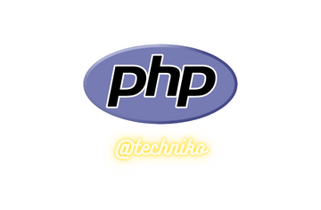

Python vs PHP: Full Comparison

What is Python?
Python is an interpreted mid-level object-oriented programming language created by Guido van Rossum for Centrum Wiskunde & Informatica in the Netherlands. It was designed to be as easy to read as plain English.
Since its creation, Python has evolved to become widely used for general applications in web development, software development, and backend system scripting. It has compatibility with nearly every system as a portable language that can be executed on various platforms using the same interface.
It is one of the most popular languages used across the board by scripters in nearly every industry from scientific research and mathematics to backend web development. It is completely open-source and can be used for a wide variety of applications.
What is PHP?
Hypertext Preprocessor, or PHP, is a widely used open-source procedure-oriented scripting language made specifically for web development. It was created in 1994 by Rasmus Lerdorf. It can generate dynamic page content as well as create, open, write, read, delete, and close server files. It is a very database-friendly language and has built-in functionality to add, delete, or modify data in a database.
Like Python, PHP is considered one of the easiest scripting languages to learn. However, it can only be used for web development due to its heavy reliance on hypertext.
Similarities Between Them
Python and PHP only have a few similarities. As one is an object-oriented language and the other is a procedure-oriented language, there are more differences than similarities. However, they are both heavily used for backend web development.
How They Are Used
Python is a favorite for mathematicians and scientists who like to run algorithms and physics programs for lab testing and work. It has also become dominant in web development, machine learning, desktop GUI creation, software development, rapid prototyping, video game design, and enterprise-level applications.
PHP is used primarily for the creation of web-based applications and web pages. It has also been used to create GUI-based apps, form data representation, create flash elements, and build e-commerce applications.
Python vs PHP: Side-by-Side Comparison
Python PHP
What it is: Interpreted object-oriented programming language Web-based procedure-oriented programming language
Primary use: Coding applications Programming for web development and application backends
Conceived: 1991 1994
Initial release: 1991 1994
Influential developers: Guido van Rossum Rasmus Lerdorf
Open format?: Yes Yes
Technologies influenced: Programming languages, software applications Websites, programming languages
The Differences
• Framework: Python has access to fewer frameworks than PHP.
• Syntax: Python is clear and concise while PHP uses a wide range of naming conventions that can lead to a clumpy mess.
• Key Features: Python features dynamic typing, rapid development, and easy-to-read code. PHP is open-source with easy deployment and continual improvements.
• Language type: Python is an object-oriented programming language intended to be used for general-purpose programming. PHP is a web development language only.
• Used In: Python is the most widely used programming language in the world for general purposes but even more so in AI, data science, and within the scientific community. PHP is considered to be the premier language for web development.
• Maintenance: Between the two, Python is much easier to debug and correct than PHP.
• Popularity: Python is the most popular programming language in use. When it comes to web development, PHP has been a long-standing crowd favorite. More recently, PHP has lost steam due to stack overflow.
• Speed: Both languages are considered to be close to the same speed when executing or deploying. However, Python has better error detection which speeds up the debugging process and in turn, wins in overall development speed.
Python
As Python is a much more versatile programming language, the list of pros and cons was adapted to compare directly to PHP for web applications.
Pros! Cons!
Easy to read and maintain Heavy memory usage
Easy to learn No multi-core or multi-thread support
Portable language Poor mobile development support
Numerous prebuilt libraries Database access limitations
Internal memory management Slow execution speed
Dynamic language
Interactive shell
Supports GUI
PHP
When weighing the pros and cons between PHP and Python, it’s important to remember that PHP can only operate in web applications. With that in mind, you can get a better grasp of when it’s better to use PHP or Python.
Pros! Cons!
Multi-platform support (Windows, Unix, Linux, and macOS) Poor structure, hard to read and maintain
High server compatibility Doesn’t scale well for content-focused web applications
Open-source Features can cause performance drops
Efficient database management Only works for web applications
Easy to learn Debugging can be difficult as errors are hard to find
Wide database support (Oracle, SQL) Insecure
Access logging
Predefined error reporting
Python vs PHP: Which is Better?
Before the 2020s, PHP was an easy pick for a better web development language. In the 2020s, Python has made gallops and leaps forward. As PHP suffers from faults in stack overflow and content scaling, Python is slowly being fine-tuned to take over.
It has already taken the lead for general purpose applications over Java, C, and C++. That’s not to say that it will replace PHP. As it stands, PHP is still better for server-side script and web development. However, learning Python can lead to a wider variety of opportunities than just web development applications.
If you’re stuck in the decision between learning the two, I would recommend going with Python. While many have claimed that both are easy to learn, Python is still simpler than PHP. It is also a more future-proof decision. As network technology continues to advance, the technical capabilities of web applications will change.
Python vs PHP: Seven Must-Know Facts
Python is an object-oriented programming language meant for general-purpose programming. PHP is a procedure-oriented programming language meant to be used for developing web pages and web-based applications.
Both languages are used for web development.
Both languages are among the easiest programming languages to learn.
Python is made to be as easy to read like plain English.
PHP has held a position as a standard web developer language for longer than Python.
Python is better for scaling to a larger operation.
Python provides better cybersecurity features.
Python vs PHP: Full Comparison FAQs (Frequently Asked Questions)
What are Python and PHP?
Python is a portable object-oriented programming language intended to be easy to read for general use purposes. PHP is a web-based procedure-oriented programming language used for web development and backend development.
When were Python and PHP developed?
Python was created in 1991 and has maintained a development path since its inception. Countless libraries have been created to make programming easier and quicker. PHP was developed in 1994 and has seen some development over the years as one of the primary tools used in web development.
Which should I choose for web development, Python or PHP?
In 2022, Python is a clear choice. While PHP has held a high position in web development for a long time, Python has taken over as a developer favorite. It has a much wider range of applications than PHP and has gained massive community support. In some cases, PHP’s structure is more straightforward than Python and both have proven performance and compatibility.
In the long run, it’s better to utilize both languages to take advantage of the differences between object-oriented programming and procedure-oriented programming. If you are choosing which to learn, both are easy to start with but Python will be more useful.
Is Python or PHP easier?
The battle for the title of the easiest programming language to learn has raged for decades. Python was created with readability in mind, which makes it a bit easier to read as a beginner. Both languages have large communities with great support, but Python’s community continues to grow as PHP is losing support.
Can Python be used instead of PHP?
No. As each language uses completely different structures, there are performance differences that lend the languages to different purposes. In some cases, PHP is a much better solution for a simple task as procedure-oriented programming has specific features that allow for simpler functions for database management or web-based applications.
What are Python and PHP used for?
Python and PHP are both programming languages. PHP, or Hypertext Preprocessor, is used for web development. Python is a more general use language that has found its purpose in nearly every industry with heavy influence in science and mathematics. It has also taken a popular position for web developers.